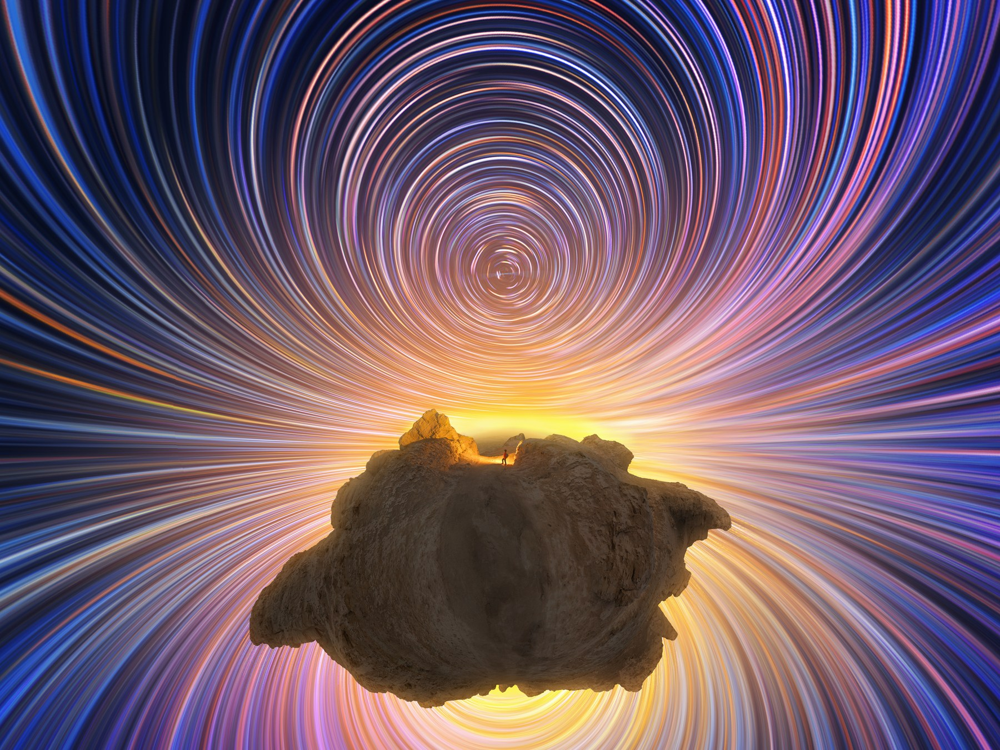

星野开源 · 拍摄与合成
单相机全景星轨
用圆周鱼眼记录整个天区，再让星轨与地景在一幅画面中相遇。
A circular fisheye can record the entire sky in one sequence. A separate panorama brings the landscape into the final image.

传统全景星轨常由多台相机同时覆盖不同方向。圆周鱼眼镜头让单台相机也能拍到大于或等于 180 度的视角，因而可以用更轻便的方式记录整个天区。
拍摄天空
准备一支视角至少 180 度的圆周鱼眼镜头，让相机朝向天顶，按正常的星轨拍摄方式连续记录天空。原笔记使用过老蛙 8–15mm F2.8 与岩石星 6mm F2.8；后者的光圈已按作者后续确认修正。
记录地景
星空序列之外，再拍摄水平 360 度的地面环境。天空和地面可以分开规划曝光与构图，最后在电脑上使用 PTGui 完成全景拼接。
一台相机记录天空，另一组画面补足大地。
这是一种降低全景星轨拍摄成本和操作难度的思路。最终影像如何兼顾艺术表达与科学性，取决于拍摄者的选择；合成时也应清楚认识天空和地景各自的拍摄过程。
A traditional all-sky star trail often uses several cameras at once, each pointed toward a different part of the sky. A circular fisheye lens with a field of view of at least 180 degrees makes a single-camera approach possible.
Record the sky
Point the circular fisheye at the zenith and make a continuous star trail sequence. The original note discusses the Laowa 8–15mm F2.8 and AstrHori 6mm F2.8. The latter aperture follows the photographer’s later correction.
Record the land
Make a separate 360-degree panorama of the surrounding landscape. The sky sequence and the ground can be planned independently, then brought together in PTGui.
One camera for the sky; another set of frames for the land.
The method reduces the equipment and effort needed for an all-sky image. How the final composite balances artistic expression and scientific accuracy remains a choice for the photographer.